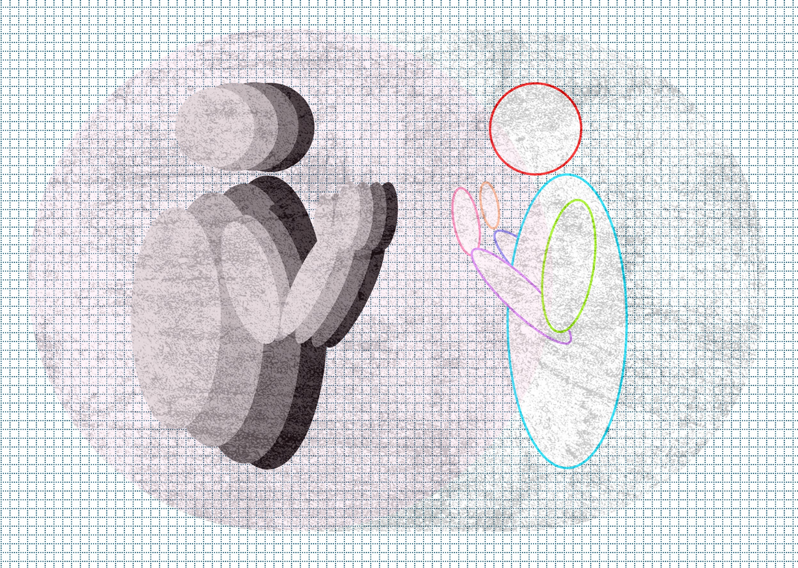

Chatting with myself about AI
26th April 2026Massive societal changes aren't easy to adapt to. To explore my own experiences and feelings I decided to mimic the chatbot format but with myself on both sides of the screen. A self-interview to understand my reluctance to adopt, my concerns and worries. Perhaps this chat can help me work out what I can do to adapt, and to understand my own complex reaction to AI? Perhaps I'll repeat this conversation to see how things have changed.
All words are my own, in the exact order that I arranged them in.
{kind=link}

Above: Trying to find my sense of self in co-existence with AI. Made by the author Click to open full-size.Hello, thanks for joining me!
This is quite contrived, isn't it.
Just go with it. Where are we?
I'm having a late lunch at work, sitting on a bench in the sun and writing into the notes app on my phone. You're in my mind, so I guess in a sense you're there too.
Well I'm glad you're making the most of the weather. So, before we get started, I think it'll add some context if you introduce yourself and your relationship with technology
Okay, well, I'm Tom, I studied mechanical engineering and decided to specialize in integrated design - partly that's because I like doing it all a bit, electronics, mechanical and business, but more than that I started getting really interested in these more high-level questions that engineers don't always get to influence, like have we really thought about how this product interacts with society? Do we even need a product? Is there a totally different but better way of doing things?
I was also thinking a lot about the environment and sustainability and I was pretty convinced that integrating circular economy and different business models was where the next phase of interesting design would be. That took me to work at places like Matter then EGG Lighting.
Great. What's your past experience of AI?
I don't have too much direct experience. I've done some algorithmic machine vision and then dabbled with pytorch years ago. I used an early version of the Autodesk Fusion Generative Design plugin around 2018.
What drew you to try Pytorch?
Well, it was around the time I was first aware of OCR and I thought it was really cool. I'd done a bit of machine vision and I realized that with pytorch it wouldn't be too hard to train a model on my handwriting and recognize different letters. I made a demo that worked fairly well within strict limits and left it at that.
Do you think if you were in that place of having more time to experiment now you might have been attracted to training LLMs instead of simpler neural nets?
Yeah, to be honest, probably. It's that impulse to see something a bit magic and work out how to do it. I don't think it would be substantially harder today to start hacking with a small open source LLM than it was then to train a neural net with pytorch. I mean I'm a bit amateur with this stuff but to get something simple done it tends to come down to tenacity and time spent.
Also, you could probably use a LLM coding assistant to help, which you couldn't do when you were in your teens and early 20s
True.
You know, even if you did want to do it all "by hand" you probably do have enough free time - I mean you're currently talking to yourself. So why not do it now?
I'm not that attracted to it, at least not compared to other things I could do. It's like, I think I could do it, but why would I? What's interesting about it? Surely there's enough people working on LLMs already.
What about using LLMs? Where are you on the scale of adoption?
I've read loads about them over the past few years so I think I have an idea of what's going on but until recently I'd barely used them.
This is probably one of the defining technologies of the decade. Why haven't you experimented more?
Okay so I was writing a program to emulate fluid flow with a semi-lagrangian method a few years ago and after I finished my mum said I bet chatgpt could have done that. So thinking I'd prove her wrong I gave it a shot (I have no idea what prompt I used or what model it was) [editor's note (also me): it was December 2023, so GPT-4] and the code was so close to mine. I think I was a bit gutted, even though it's a really simple program.
Ages later I was really stuck writing the intro for my Celtic knots blog post (around Jan 2026). I had words but I couldn't turn it into a decent piece of writing. With Copilot in word flashing at me from every toolbar in Word, I gave it a go. It gave me some "fine" options but I couldn't bring myself to use them. For a while I'd been super annoyed that my Microsoft subscription cost had jumped like 35% to cover AI features that I hadn't opted into, so I guess I was determined not to use them.
Microsoft sucks, feature bloat sucks, you and I can agree on that. But didn't it help you? It seems like you're almost threatened by having your work done for you?
Well, maybe. But each of those projects I was doing for myself, so I guess the motivation is a mix of things like learning, proving to myself I can overcome X challenge, and showing something cool to other people. If I just get it done for me all of that goes away and I'm just left with the appearance of having done something. Whether I got AI or someone else to help me - like imagine paying someone on fiverr to write your blog post for you, that'd be obviously insane.
Well yes but you could probably have asked an LLM to write this interview and you could have had a stroll through Alexandra Park instead of using up your lunch break.
That's the promise isn't it. We'll use automation to increase productivity, introduce UBI, reach a 2-day working week and spend the rest of our time writing poetry and playing tennis.
And yet...?
I like having ideas but I also like completing them and knowing I did it. It's rewarding and gives me a lot of self-worth, I guess. Besides, I don't know where this conversation is going, yet - I might get something from it, from the time spent. On a serious note about UBI, if I could adopt AI at work and reduce my hours for the same pay, that would be quite a different proposition to, well, reality.
How does it make you feel to know you could have, for many of those projects you've done recently, had it done faster, easier and more directly using an LLM? And that some other people are certainly doing so?
That's tricky. I mean at this point I already know some stuff, right? I'm doing projects in areas I already have skills. Completing the project requires the skills I have, learning some new stuff, and time and effort. So there's an argument that I could be skipping the boring stuff and focusing on the interesting or new bits. But then...where's the line? I was using VSCode yesterday and could hardly think before having a code snippet suggested to me, that I then had to read and review. Read and review. Read and review.
I also think I’ve got the idea that working hard is worthwhile very ingrained, it's almost seen as virtuous? Sounds a bit grand but I feel like you're conditioned to feel that way through school, uni and work. And I'm critical of that attitude to a degree, especially if it's making you anxious or stressed or have no work-life balance, but on the other hand doing things and contributing to collective enterprise is a big part of what holds people in society, makes us interdependent. As well as makes us feel worthwhile.
There's another strand which is helping you do things you couldn't otherwise do, or assisted learning. I recently translated a Python program to JavaScript and after a few tweaks it was done. I just asked the model (Claude Haiku 4.5) a fairly simple prompt. After that I could tag specific functions when I asked it to add or change functionality, which I liked because it made me feel like I was dealing with a predictable process not a probabilistic one.
So yeah the outcome is amazing because I wouldn't have been able to do that. On the other hand, did I learn anything new about JavaScript? No.
But you got the task done, which is the point? Do you just like working hard?
Yeah, maybe. Like I said, I think I attach a lot of self-worth to my skills and the work I do. To be honest, I'm not that comfortable with the feeling that some of those skills I've worked hard for - say for example research, writing, programming - are being devalued, or, as some might say, made obsolete.
So we talked about feeling threatened before, and now it seems that goes all the way to how you see yourself and your place in society?
It definitely does. I definitely feel a bit like there's been a rug-pull. Like just as I'm hitting my stride in my career there's this almost step-change in how you do...not everything, but a lot of things. Obviously I’m expecting change – in some ways I really want change – but this feels so far-reaching.
Like, a whole load of touchpoints are changing very quickly. The internet, art, music, work. It feels a little like being a passenger in a car that's going too fast with poor visibility. So yeah, there's the experience of destablisation.
In terms of societal values I was, and am, frustrated that sustainability wasn't getting enough attention but at least it felt like there was some momentum. I say felt in the past tense. I don't feel that way now and it makes me feel…bad. I’m not sure exactly what. Mourning? Sadness? Fear? Loneliness? And it feels like an insult that because we have a technology which can write your homework for you it’s suddenly more or less accepted that we are building as many new datacenters as possible, even directly powered by new coal plants and nuclear in the US, etc. My point is that it's not the direction I was looking towards, or forward to.
My lunch break is up - we'll have to pick this up another time
-We're back
Yep, it's a few days later and this time I'm at my PC. I had some more thoughts.
Before we get to that, you brought up music and art - maybe let's explore that quickly?
For years I was very into urban sketching, drawing city landscapes in person. It's a way of interpreting and experiencing a place and making that a presence in the illustration. I play guitar, but not in any aspirational way. Over that last few years I've been to a few festivals and a lot of gigs - which is a great thing about living in Glasgow. I think listening to music live is a meaningful experience that you're sharing with other people, supporting a venue, artists and technicians etc. It doesn't mean you're going to come away feeling changed every time, but it's immersive, gets you in a room with other people, takes you out of your bubble and forces you to concentrate on an artistic expression and see what you can take from it, from the artist's vision.
But with AI generated music, or art in general, instead of interacting with an artist, another person, you're interacting with...nothing? The hollow imitation of art. A simulacrum.
Nice word
Yeah I did google that one to check the meaning and I think it fits quite well. Jean Baudrillard used it in an essay in 1981 to refer to copies which have no original [link]. I haven't read the essay. Recently I saw a plastic rose on the floor, covered in grime and sitting beside weeds coming up from the cracks where the tarmac met the wall. At first glance it did really look like a rose.
So, you won't be listening to AI generated music
I read somewhere that like 75% of music being added to streaming platforms today is AI generated. Doesn't that just paint the bleakest picture of the future?
The idea that we could accept listening to AI generated music is so scary to me. Like, surely the listener is accepting the loss of almost all meaning and creativity in the music and just receiving the hollow aesthetic outcome. Does the art mean less for not having been made by a person, not being the product of their thought, effort, experience? That it didn't require a significant creative process? For me, yes, it means less. It means nothing.
And where the technology is used instead of human effort and creativity it, by which I mean the technology and the product, takes on a cultural meaning - not just an emptiness but a destructiveness, like an invasive species that harms biodiversity. Art and human creativity are exactly the things I think we should be valuing and making time for in society, not trying to automate.
You don't think there's an analogy with previous technological changes which influenced art - for example new types of paints, photography, photocopying, the printing press, photoshop? In all of these cases you would probably agree that while they changed the nature of art, overall artists adapted to use technologies to create new forms that were different but still expressive?
Well I think you have to make reference to those things but also see where the analogy breaks. A machine is a tool, a camera is a tool, photoshop is a tool. People say AI is a tool, but I think it’s very different. One thing I can think of to point out is that the things we think of as tools still require skill, experience and training to use well. I know that using AI for complex tasks still requires skill, but I’m not convinced by the tool metaphor.
Do you have a better metaphor?
How about necromancy.
Necromancy?
Like we’re reanimating the corpses of a trillion ASCII characters, pried from the grave of a society that, tragically, had to create all its own stuff. And we’re making them dance, but they’re flawed. Not the same, somehow. Not alive, that’s for sure.
Er, okay.
At least, with the tool metaphor, I guess where I see it breaking down is the extent to which human creativity and effort is involved. Like, a magic wand is only a tool if it requires some skill to use, right? So maybe for technical stuff like code that’s a bit of a moot point, how you get the code that works. But for art and communication it’s important. I know we'll see really interesting, rich and poignant art which uses AI in its process, but that's going to be the exception by volume. Mostly it'll be derivative content which means nothing, contributes nothing to culture and undercuts artists working in the same space.
Actually, you know what, we need to talk about capitalism.
I suppose I was trying to avoid it
Well, we can't avoid it really can we. Not if we want to do this justice.
Fine. So, what do you want to say about capitalism and why do you bring it up now?
Well, continuing with the music thread, you know that platforms will use AI to pay artists less. Because the cost of creation is so low, and because it's true that the human effort so limited - or at least, the direct human effort - platforms can pay less for AI generated music. And then that creates a profit motive to encourage listeners towards low-cost AI generated music. So the way the technology is being used is to suit the economic structure of the platform, by which I guess I mean Spotify, and Spotify is the way most people access music because it's successful in capitalism.
Technology always retains the imprint of the society which creates and uses it and AI is no different. Our society today already undervalues creativity and authenticity and therefore also the people that perform creative work. So there's no way to expect that AI will do anything but accelerate that tendency.
Take it back to my tongue-in-cheek quip about AI giving us a 2-hour working week and UBI in which we all play music and write poetry. Someone probably believes in that vision. But you can see we're not even pretending to move towards that utopia when we're in a culture that's as excited about automating the music and poetry as it is the emails.
Do you not think that there will be or are more ethical models or ways of using AI that avoid the issues you're talking about? This sort of erosion of creative meaning?
Maybe, I'm not sure. Come back to me in a while. I know there are small models, open-source models, self-hosted models, but I don't know much about them, at least not yet. Besides, I'm not convinced they can really address what I'm talking about.
You know, let me try again.
I've got all day
It's those values, like creativity, meaningfulness, empathy, openness, honesty, authenticity - genuine connection between people - that I'm worried about. Without those values how can things get better in society? I mean, as well as without breaking down capitalism, but that goes hand in hand... but anyway, I can't see how AI helps us develop any of those values. I really can't.
And that applies especially to art but actually to all things - I think the existence of AI is going to cause us all to put up a new layer of defence to everything we experience. To default towards scepticism. I think it's already happened to a large extent - this horribly cynical response to seeing art and thinking that’s nice, but AI could have probably made that no problem. Yeah, well, would you rather it had been made by AI?
Maybe that’s coming from a sort of realist acceptance that this is happening, so might as well accept it
Well yes, we've become such passive recipients of technology it barely occurs to consider that technology is a product of effort and decisions, and instead act like it just happens to us. It’s seen as naïve to challenge technology, as if the concept of societal progress isn’t itself a culturally constructed one.
What do you mean?
I mean that it seems like there’s an assumption that this technology is the future, but that’s because it’s already been accepted as the future. What about a different bloody future, why can’t that be “the future”? Having chatbots that create stuff is actually not an essential part of any utopia I can think of. Or at least it’s not a key feature!
I see what you mean – I think you’re probably advocating for a more human-centric vision of progress
This is very gut-feel but it seems to me that as social beings it is actually very important to us that we know that, regardless of automation and tools and computers and whatever else, that things are made in some meaningful sense by another person? That you're speaking to a person? Maybe that's the real live experiment we're on. How much and how quickly can we remove the human touch from everything and still feel like it's our society. Not a regurgitated synthetic copy that imitates a human society.
And of course that ties into topics like loneliness, alienation and isolation. To place AI in our response to those issues is so, so worrying to me.
Says the guy arguing with himself…maybe it's time to start wrapping this up. We're clearly getting somewhere but I'm not sure if this is making for good reading material
Ah, sorry, the content isn't good enough. Yes, I can see how that's a problem.
I was speaking to someone the other night who writes poetry. I was asking about his process - does he always write from personal experience or emotion, or does he try to explore emotions or ideas outside of what he's feeling? And his response was that even if he was to do something like that, the spirit of all his past experiences and emotions would still be present in his work. And with that I think he summarised why art needs to come from a person or people to be meaningful.
And reflecting on that, I think it helps me to see forward, even if only slightly. I don't control spotify or any other capitalist entity which exerts influence over society and culture, but I can continue to buy art directly from artists, to attend events in person, to try and strengthen community. Do my best.
I can talk to other people, perhaps disagree with them sometimes – but share things with them, and create things myself. Think about my choices. Whatever I do will carry the spirit of my experiences with me, and I bet other people will think it's meaningful. I refuse to see the act of creation as being obsolete because I could spend tokens to create, no - have something created for me - which is aesthetically similar but a simulacrum of my own work.
I thought we were going to talk about technology, work and important stuff like that but you clearly wanted to talk about art and music more than I expected
I think a lot of the same applies to work in general - it's just seeing that line of what creative activities are valuable and which are not. I suppose it comes down to who is defining valuable. Someone might think that writing an email isn't a valuable use of time, but I'm still inclined to think that once we take the expectation of communication being directly human to human we will lose something, perhaps forever, except for in person. It’s the risk that we can’t know for sure if an image, text or video is made by a person or a machine.
You opened with talking about sustainability and environment but didn't really pick that up much
You're right, I should have probably made a case for reducing energy and resource use and how we could be focusing engineering effort on the urgent challenges we face in society rather than the ability to have a graphics card draft your email for you. Maybe I'll explore it another time.
And, exiting thoughts on how you'll be using and thinking about AI
Everyone at my work is progressively being given access to some sort of Claude subscription, so I'll have the opportunity to experiment without it coming from my own wallet. And I'll probably feel conflicted when I'm quickly able to work out how to use it in my workflows and save time on certain things, like for example supporting research, and things like brainstorming.
The idea of a self-hosted model which gives me a level of trust and transparency into things like energy use and privacy appeals a lot. I'm not going to be an early adopter, that's clear, but I'm expecting that will come into the mainstream soon. It’s not obvious to me if things will trend towards AI models being monopolised or commodified, though I get the impression it’s more the latter.
I want to look after my skills but recognise that I can't pin my self-worth to how many keyboard actions I do in a day. So I guess I'll be trying to find that line between what to automate and what to do myself, and how to keep my attention span and ability to struggle, fail and keep trying. Creativity is hard, but it's what makes us human.
Anything else? Or will I just disappear now?
This was helpful, thanks. Let's do it again some time.